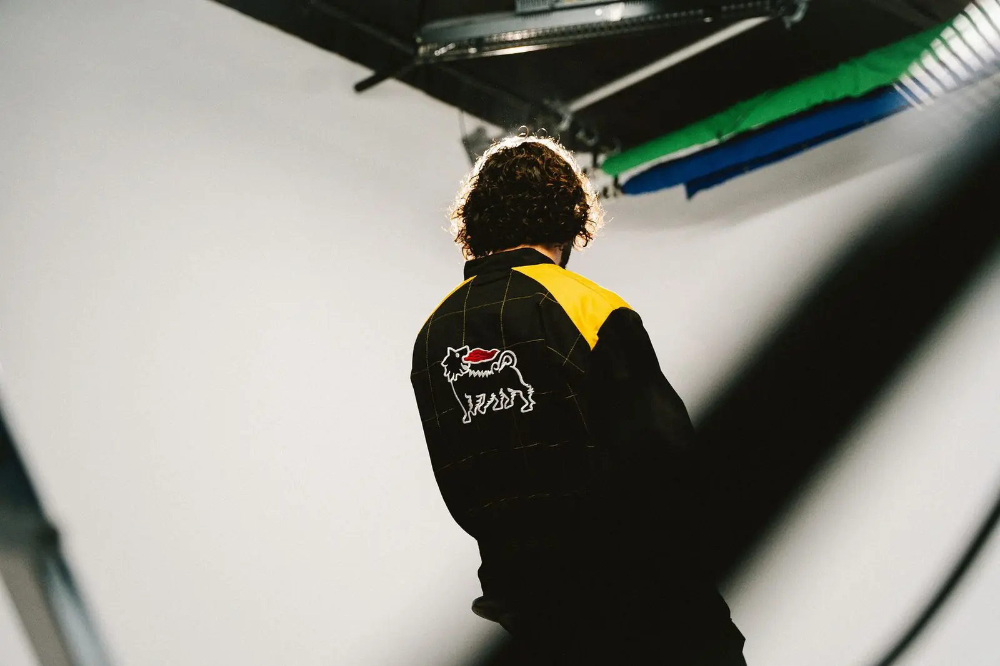
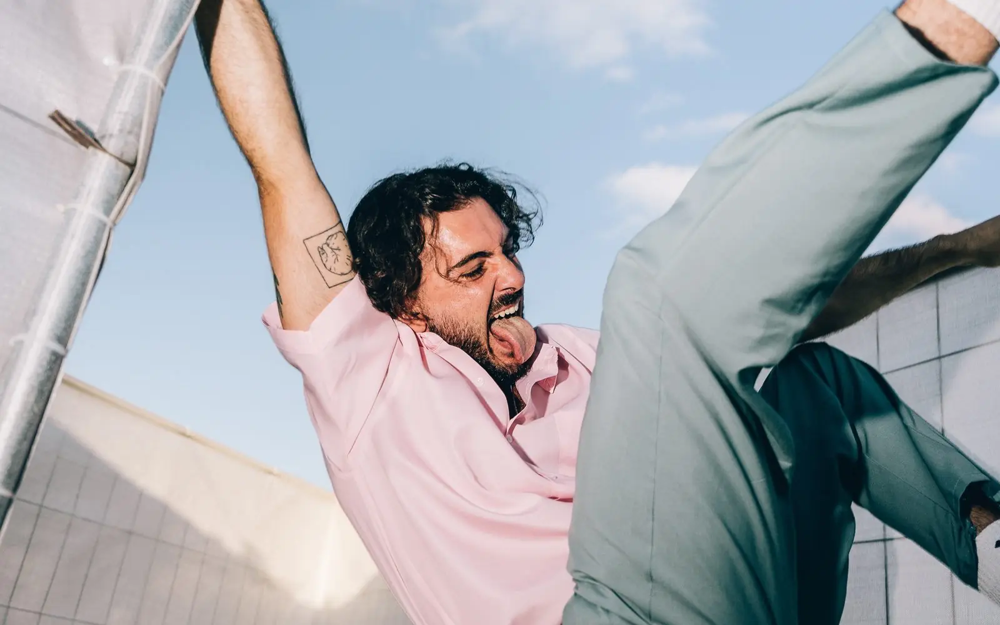
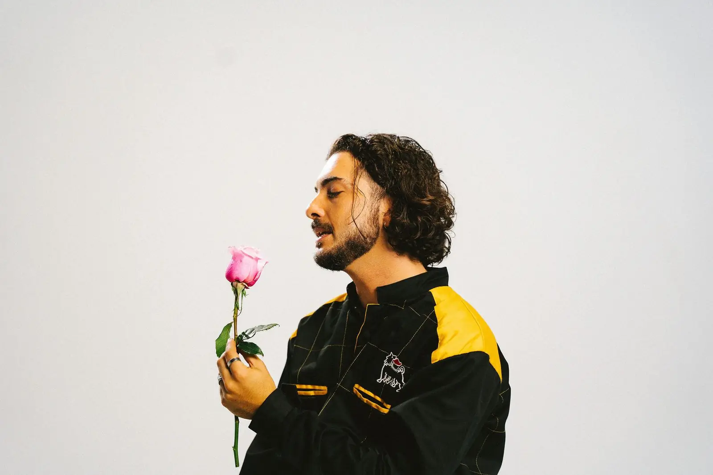
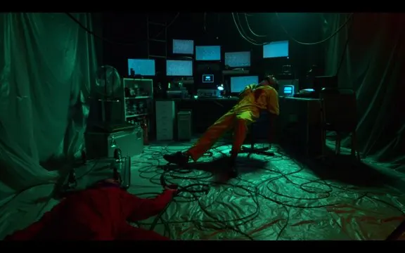
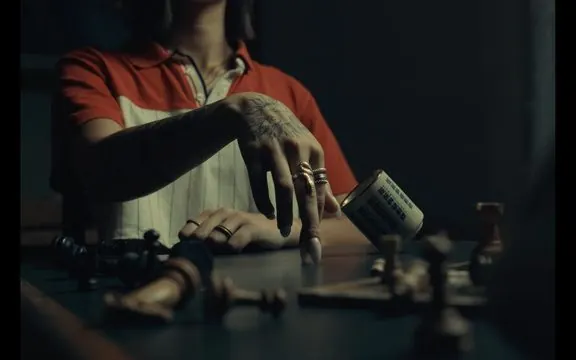
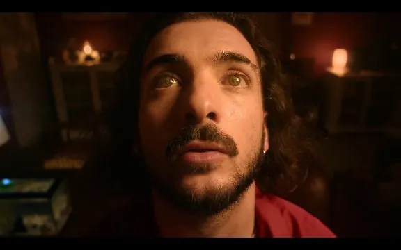
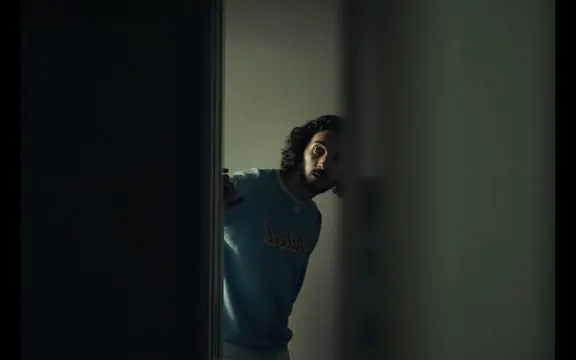

- 10M+streams of the album Perspective (2021)
- Top 50Limbo (2024), one of the best Portuguese albums of the year for BLITZ and Expresso
- 50+artists on the AVALANCHE albums Volume I and II (2022, 2025)
- Winnerof the Antena 3 national radio band competition, as Antony Left

Music
António Graça is a multi-faceted Portuguese artist and producer, currently based in Lisbon.
He began his musical career in 2015 with the indie-folk project Antony Left, exploring classical textures such as violin, cello, and guitar. After winning a national radio band competition (Antena 3), he released his debut album Influence in 2017.
In 2019, the identity LEFT was born, moving towards a sound influenced by electronic music and R&B. His 2021 album Perspective surpassed 10 million streams across digital platforms.
In 2024, he released Limbo, a game-album that blurs the line between narrative and interactivity, inviting listeners to make choices. It was selected by BLITZ and Expresso as one of the 50 Best Portuguese Albums of the Year.
Alongside his solo work, he has written and produced music for a wide range of national and international artists, from indie to mainstream pop, including iolanda, Inês Apenas, and Diogo Piçarra.
Deeply connected to collective creation, he co-founded AVALANCHE in 2020, a project bringing artists together in studio sessions and residencies to experiment, compose, and release music.
The collective released albums Volume I and II in 2022 and 2025, featuring over 50 national artists.
More recently, his main field of experimentation has been the live format. Drawing from his background in music production, theatre, and dance, he creates immersive performances where live-looping, improvisation, and physical presence merge. Whether solo or collaborative, his shows reflect a constant drive for reinvention, connection, and fearless artistic exploration.
Live looping

Theatre-dance
Playback Theatre
Training, practice, and live improvised music since 2019.
Clowning
Intensive course taught by Pedro Fabião, 2024/2025.
Theatre
Training and workshops with ACT, Espaço EVOÉ, Jorge Parente, among others.
Improvisational Comedy
Training and practice with the groups Impromix and La Trouppe (with live music).
Contact Improvisation Dance
Ongoing training and consistent practice with various groups and teachers, both nationally and internationally. Live musical accompaniment for group improvisations.
Animation Voice Acting
Training at ZOV; voice acting work for Netflix (2025).
Festivals
Performances
- 2025NOS Alive
- 2025Festival F
- 2023Festival da Canção
- 2019N2 Chaves
- 2015Super Bock Super Rock
Music curation, stage hosting, production and volunteering
- 2025Sensoria
- Since 2022Boom Festival
- Since 2018Waking Life
- 2012FMJ

Listen & watch
Streaming Spotify
Music videos YouTube



